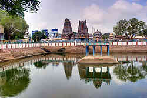

|
|
Places of worship
Kapaleeshwarar Temple in Mylapore
Kapaleeshwarar Temple is a temple of Shiva located in Mylapore, Chennai in the Indian state of Tamil Nadu. The form of Shiva's wife Parvati worshipped at this temple is called Karpagambal (from Tamil, "Goddess of the Wish-Yielding Tree"). The temple was built around the 7th century CE in Dravidian architecture. According to the Puranas, Shakti worshipped Shiva in the form of a peacock, giving the vernacular name Mylai (Mayilai) to the area that developed around the temple - mayil is Tamil for "peacock". Shiva is worshiped as Kapaleeshwarar, and is represented by the lingam. His consort Parvati is depicted as Karpagambal. The presiding deity is revered in the 7th century Tamil Shaiva canonical work, the Tevaram, written by Tamil saint poets known as the nayanars and classified as Paadal Petra Sthalam.
The temple has numerous shrines, with those of Kapaleeshwarar and Karpagambal being the most prominent. The temple complex houses many halls. The temple has six daily rituals at various times from 5:30 a.m. to 10 p.m., and four yearly festivals on its calendar. The Arubathimooval festival celebrated during Pa?kuni in the Tamil calendar is its most prominent festival.
The original temple was built on the sea shore but was destroyed by the Portuguese. The present masonry structure was built 1.5km away from the original location by the Tuluva dynasty (1491–1570 CE) of the Vijayanagara Empire. The temple is maintained and administered by the Hindu Religious and Endowment Board of the Government of Tamil Nadu.
Parthasarathy Temple in Triplicane
The Parthasarathy Temple is an 8th-century Hindu Vaishnavite temple dedicated to the god Krishna, located at Triplicane, Chennai, India. The temple is glorified in the Divya Prabandha, the early medieval Tamil literature canon of the Alvar saints from the 6th–9th centuries CE and is classified as among the 108 Divya Desams dedicated to Vishnu. The name 'Parthasarathy', in Sanskrit, means the 'charioteer of Arjuna', referring to Krishna's role as a charioteer to Arjuna in the epic Mahabaratha. It was originally built by the Pallavas in the 8th century by king Narasimhavarman I. The temple has five of the incarnations or avatars of Vishnu: Narasimhar, Ramar, Varadaraja, Ranganathar and Krishna. The temple is one of the oldest structures in Chennai. There are shrines for VedavalliThayar, Ranganatha, Rama, Gajendra Varadharaja Swamy, Narasimha, Andal, Anjaneya, Alvars, Ramanuja, Swami Manavala Mamunigal and Vedanthachariar. The temple subscribes to Vaikhanasa agama and follows Thenkalai tradition. There are separate entrances for the Krishna and Narasimha temples. The gopuram (towers) and mandapas (pillars) are decorated with elaborate carvings, a standard feature of South Indian Temple Architecture.

Vadapalani Andavar Temple
Vadapalani Andavar Temple is located in Vadapalani, Chennai. The temple is dedicated to Lord Muruga. The temple was renovated in 1920s and a Rajakopuram was built during that time. The temple has grown in popularity believed in part due to the patronage of cinema stars. The moolavar in standing posture resembles the Palani Muruga in every respect. In the inner prakara, there are many niches housing Dakshina Murti, Chandikeswar, Mahalakshmi, et al. It has a spacious hall used for conducting marriages and religious discourses. It is one of the most-frequented Murugan shrines in the city of Chennai.The entrance to this temple is crowned with a Rajagopuram adorned with several stucco images depicting legends from the Skanda puranam. In front of the temple is the temple tank. The eastern tower rises to a height of 40.8 metres. The 108 bharata natyam dance gestures can be seen on the eastern tower as well.
San Thome Basilica
San Thome Basilica is a Roman Catholic (Latin Rite) minor basilica in Santhome, in the city of Chennai (Madras), India. It was built in the 16th century by Portuguese explorers, over the supposed tomb of St Thomas, an apostle of Jesus. In 1893, it was rebuilt as a church with the status of a cathedral by the British. The British version still stands today. It was designed in Neo-Gothic style, favoured by British architects in the late 19th century. St Thomas, one of the twelve disciples of Jesus, arrived in Kerala from Judea in 52 A.D. and preached between 52 A.D. and 72 A.D., when he was martyred on St. Thomas Mount.
San Thome Basilica is the principal church of the Roman Catholic Archdiocese of Madras and Mylapore. In 1956, Pope Pius XII raised the church to the status of a Basilica Minor, and on February 11, 2006, it was declared a national shrine by the Catholic Bishops' Conference of India. The San Thome Basilica is a pilgrimage centre for Christians in India. The church also has an attached museum.
Wallajah Masjid
Wallajah Mosque or Big Mosque Mosque is placed in widespread grounds, which are being used as a place for religious and cultural functions and activities and this is supposed to be bigger than Delhi Juma Masjid. This imposing structure exhibits the fusion of medieval Indian, Islamic and Iranian architectural styles and was constructed using grey granite. Neither wood or steel has been used in any part of this mosque. The mosque is a commanding structure of symmetry and the façade of the mosque is adorned with two tall minarets. There is no dome structure.
Wallajah Mosque was built in 1795 by the Nawab Wallajah family in memory of the Wallajah Mohamed Ali (the Grand Father of the Present incumbent of Amir Mahal and the Prince of Arcot) after his demise. Even now the Prince of Arcot is closely associated with this mosque. This is one of the most attractive shrines in Chennai and is one of the main Muslim pilgrimage sites in the south. Walajah Mosque remains open for visitors from 5 AM to 8 PM daily.
St. George's Cathedral, Chennai
St. George’s Cathedral is a Church of South India (previously "Church of England" and "Anglican") cathedral in Chennai, India. The cathedral was built in 1815. St. George’s occupies an important place in the history of Christianity in India, as the Church of South India was inaugurated here on September 27, 1947. The Cathedral was packed and the big pandal outside held over 2,000 people. It marked the breaking down of ecclesiastical barriers between Protestants of various traditions. The architecture of St. George’s Cathedral is remarkable for its tall spire, pillars, marble statues, mural tablets and memorials inside. The Cathedral is a piece of architectural grandeur resting on a tier of steps.
go to top
Home
Developed by SUGATO CHAKRABORTY (currently pursuing B.Tech in CSE from West Bengal University of Technology, developer at Boscom Software,2014)
|
|